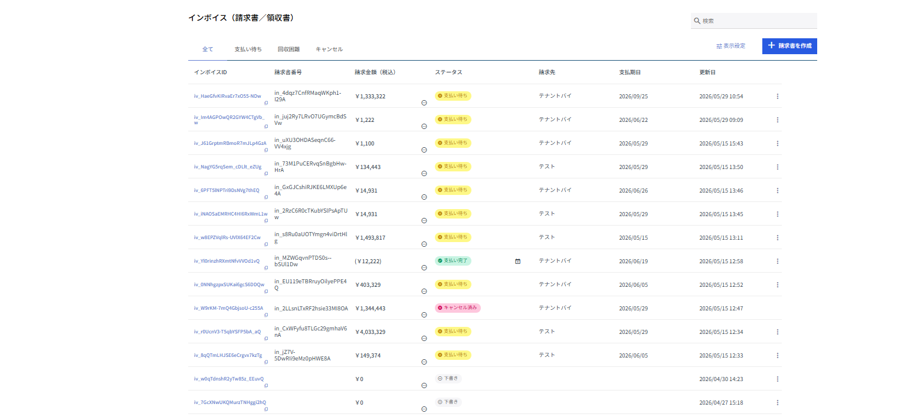
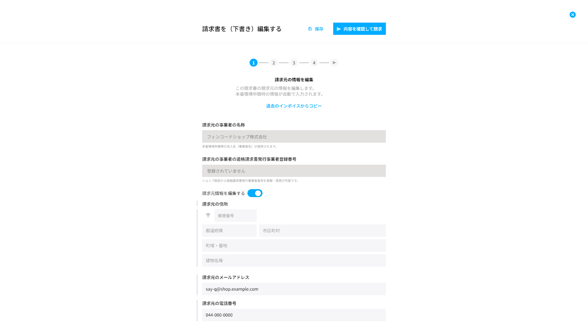
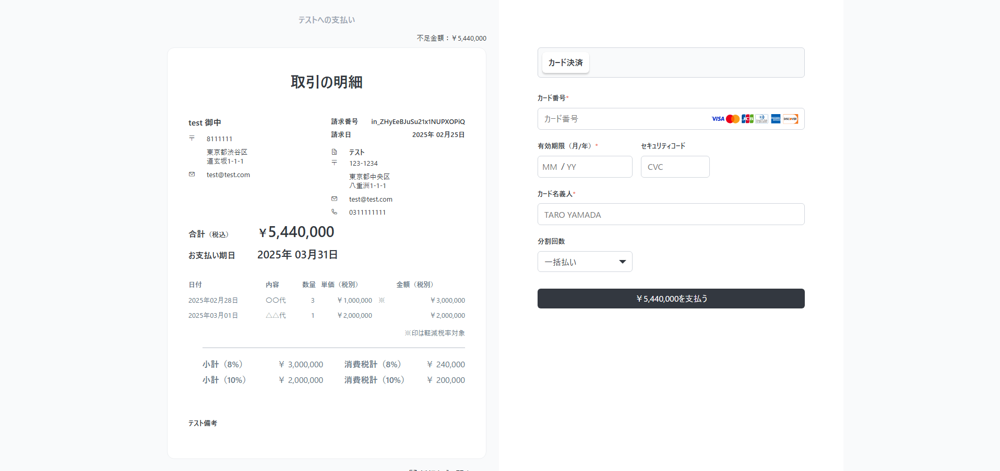
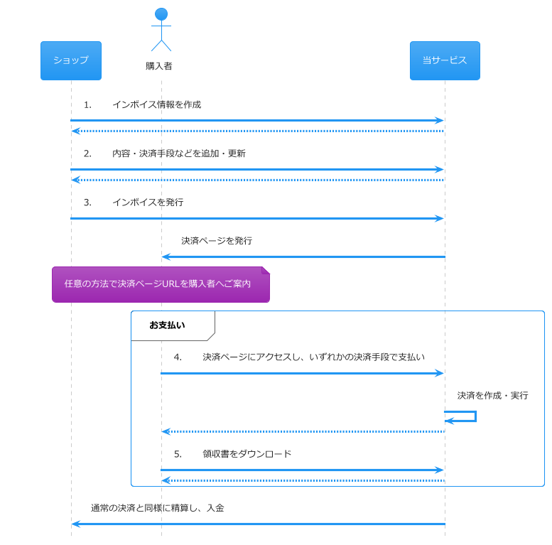

使用账单功能
可通过 fincode 控制面板或 API 使用账单功能签发账单并接受支付。
从控制面板使用账单功能
可在 fincode 控制面板中填写账单所需信息并签发账单。
1. 打开账单列表页面

登录 fincode 控制面板，从左侧菜单选择“账单”进入账单列表。
2. 打开新建账单页面并创建账单信息

在账单列表页面点击“创建账单”，进入新建账单页面。
- 收费方企业信息
- 账单收件方信息
- 交易内容
- 付款期限
- 是否通过邮件发送收费内容
- 各支付方式的设置
填写上述信息等内容，点击“发起收费”即可签发账单，也可暂时保存而不发起收费。
应收金额可以根据未税单价填写，也可以根据含税金额倒算。还可以通过负数明细行体现折扣等优惠。
使用银行转账（指定账户）时
需要预先登记账户。在商户设置的“登记或查看账单上显示的金融机构账户”中登记后，即可设为支付方式。
需要预先登记账户。在商户设置的“登记或查看账单上显示的金融机构账户”中登记后，即可设为支付方式。
3. 向买家提供支付页面 URL

完成第 2 步后，收费内容无法修改，系统会生成支付页面。将 URL 告知买家，待买家完成支付后，收费即告完成。
如果第 2 步选择通过邮件发送收费内容，买家会收到写有收费内容和支付页面 URL 的邮件。
使用银行账户自动扣款时
系统会在指定扣款日自动扣款。如果第 2 步选择通过邮件发送收费内容，买家会收到写有收费内容和预计扣款日的邮件。
系统会在指定扣款日自动扣款。如果第 2 步选择通过邮件发送收费内容，买家会收到写有收费内容和预计扣款日的邮件。
使用银行转账（指定账户）时
即使买家完成付款，账单也不会自动变为“已支付”。商户确认入账后，需要手动将状态更新为已支付。
即使买家完成付款，账单也不会自动变为“已支付”。商户确认入账后，需要手动将状态更新为已支付。
通过 API 使用账单功能
签发账单从创建“账单”实体开始。

- 创建账单使用此接口创建账单信息。
- 更新账单使用此接口为已创建的账单添加或更新交易内容、付款期限和支付方式等信息。
- 签发账单执行此接口后，根据账单信息生成支付页面。此后不能再修改构成账单的信息。
- 买家在支付页面选择一种支付方式完成付款。使用银行账户自动扣款时，系统会在指定扣款日自动执行支付。
- 支付完成后，可在支付页面下载收据。
invoice.paid通过 Webhook 接收该事件后，即可得知支付完成。其他 Webhook 事件请参阅通过 Webhook 跟踪账单收费页面。
使用银行转账（指定账户）时
需要预先登记账户。请使用商户支付方式 API 登记。
即使买家完成付款，账单也不会自动变为“已支付”。商户确认入账后，需要手动将状态更新为已支付。
需要预先登记账户。请使用商户支付方式 API 登记。
即使买家完成付款，账单也不会自动变为“已支付”。商户确认入账后，需要手动将状态更新为已支付。